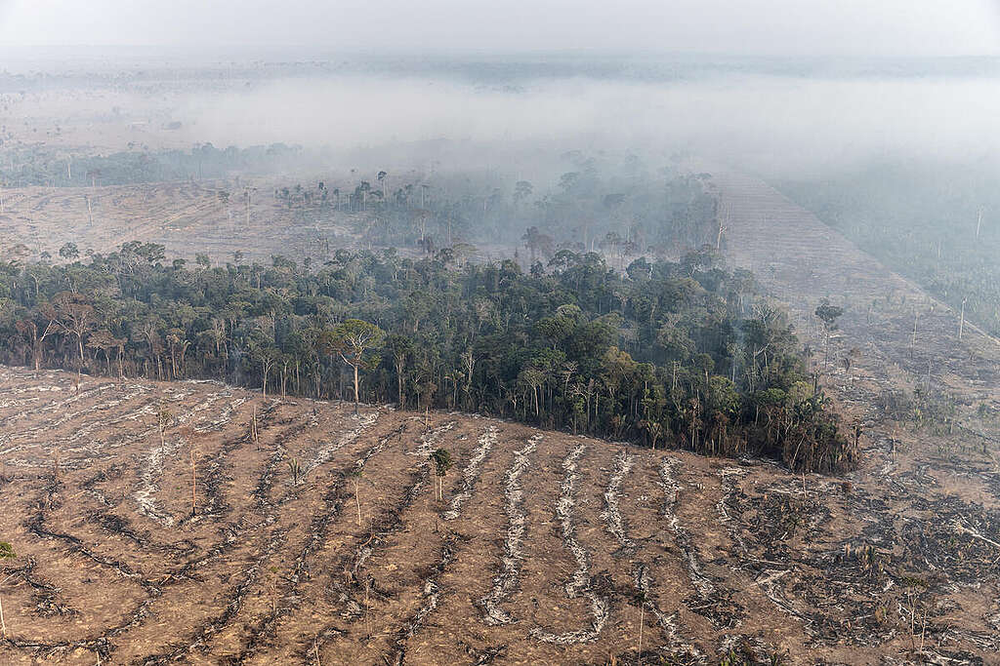

DESMATAMENTO NA AMAZÔNIA
O desmatamento, uma triste realidade que assola nosso planeta, resulta na perda de florestas exuberantes, lar de inúmeras espécies e fonte vital de oxigênio. Cada árvore derrubada é um lamento silencioso que ecoa pela natureza, afetando não apenas a fauna e a flora, mas também o clima e a qualidade de vida das gerações futuras. À medida que as florestas desaparecem, vemos um aumento nas inundações, na erosão do solo e nas mudanças climáticas, que nos afetam diretamente. Podemos ajudar a reverter essa situação por meio de ações simples, mas impactantes: apoiar projetos de reflorestamento, consumir produtos sustentáveis, reduzir o uso de papel, e participar de campanhas de conscientização sobre a preservação ambiental. Cada pequena ação conta e, juntos, podemos ser a voz das árvores que ainda resistem. 🌳❤️

Desmatamento em áreas protegidas cai quase quatro vezes na Amazônia em 2023 - Imazon
QUEIMADAS
As queimadas, uma tragédia que assola florestas e ecossistemas, não só devastam a vida animal e vegetal, mas também liberam enormes quantidades de carbono na atmosfera, exacerbando as mudanças climáticas. Cada chama que consome uma árvore é um grito de dor que ecoa pelo planeta, destruindo lares e deixando comunidades em desespero. O ar se torna irrespirável, e o futuro de muitas espécies se torna incerto. Podemos ajudar a combater esse desastre por meio de ações conscientes: apoiar iniciativas de prevenção a queimadas, denunciar incêndios florestais, adotar práticas agrícolas sustentáveis e incentivar o uso responsável do fogo. A mudança começa com a conscientização e a ação individual. Juntos, podemos preservar a beleza do nosso planeta e garantir um futuro mais saudável para todos. 🌍🔥

Queimadas na Amazônia
CONSTRUÇÕES ILEGAIS
As construções ilegais são um grave problema que afeta o meio ambiente e as comunidades. Muitas vezes, erguem-se prédios e infraestruturas sem respeitar normas, resultando na destruição de ecossistemas frágeis e no deslocamento de famílias. Cada nova edificação irregular é um golpe no equilíbrio da natureza e um risco para a segurança e o bem-estar das pessoas que nela habitam. Podemos ajudar a combater esse cenário de destruição promovendo a conscientização sobre a importância do planejamento urbano sustentável, denunciando construções irregulares às autoridades competentes e apoiando projetos que visem a regularização fundiária. Cada ação conta, e juntos podemos proteger nosso patrimônio natural e garantir que todos tenham um lugar seguro e digno para viver. 🏡🌱

Construções ilegais às margens do Rio Cabuçu
EXPLORAÇÕES ILEGAIS
As explorações ilegais, seja na forma de mineração, extração de madeira ou pesca, causam danos irreparáveis ao meio ambiente e às comunidades que dele dependem. Essas práticas predatórias não apenas destroem habitats e colocam em risco espécies ameaçadas, mas também empobrecem populações locais, que perdem seu acesso a recursos naturais vitais. O estrondo das máquinas e a devastação das paisagens são ecos de uma natureza ferida, clamando por socorro. Para ajudar a combater essa realidade devastadora, podemos agir de diversas maneiras: apoiar organizações que lutam contra a exploração ilegal, participar de campanhas de conscientização sobre a importância da conservação ambiental e exigir políticas públicas que protejam nossas florestas e oceanos. Cada voz conta, e juntos podemos fazer a diferença, garantindo um futuro mais justo e sustentável para todos. 🌳✨

Exploração ilegal de madeira na Amazônia é impulsionada por 100 propriedades rurais com CAR, diz estudo - Imazon
Finalidade do nosso projeto!
Nosso projeto nasceu da necessidade urgente de proteger o nosso planeta e as comunidades que dele dependem. Com um propósito claro, buscamos criar uma rede de apoio e conscientização para denunciar práticas devastadoras como queimadas, desmatamento, construções ilegais e explorações predatórias. Acreditamos que cada voz conta e que, juntos, podemos fazer a diferença.
Por meio da nossa plataforma, queremos empoderar cidadãos a reportar irregularidades, compartilhar informações e educar sobre a importância da preservação ambiental. Cada denúncia não é apenas um ato de coragem, mas um passo em direção a um futuro mais saudável e sustentável para todos. Junte-se a nós nessa luta por um mundo mais justo e equilibrado! 🌍🤝🌿